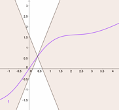
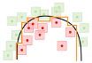
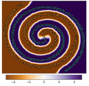

Reinforcement Learning is broadly applicable for diverse tasks across many domains. On many problems, it has achieved superhuman performance [5]. However, the black-box neural networks used by modern RL algorithms are hard to interpret and their predictions are not easily explainable. Furthermore, except for some limited architectures and settings [3], both their correctness and safety are not verifiable. Thus, we cannot give any safety guarantee for their operation. This limits the application of reinforcement learning for many domains where this is essential, e.g., for autonomous vehicles or medical tasks. Previous work has shown that adding a loss based on the local Lipschitzness of the classifier leads to more robust policies, especially against adversarial attacks [8].
 |
 |
 |
| Figure 1: A Lipschitz-continuity: the gradient is below some threshold. | Figure 2: Overfitted decision boundary. | Figure 3: Smooth decision boundary. |
This project should investigate what effect a local Lipschitzness constraint (see the visualization in Figure 1) or domain randomization on the original policy has on the generated policies. For an environment that is easily visualized, policies should be trained with the above additions and visualized. In particular, the decision boundaries are of interest here (see the overfitted decision boundary in Figure 2). In terms of robustness, the policy may be more robust to slight variations of the environment dynamics (so-called model mismatches). In contrast, in terms of explainability, smooth and wide boundaries (see Figure 3) may lead to an easier extraction of rule-based (e.g., decision tree) policies (e.g. through [1]).
- Experience with Reinforcement Learning in theory and practice
-
Experience with Python and (preferably) PyTorch
Main contact at the department: Dr.-Ing. Christopher Mutschler
External point of contact: Lukas Schmidt, Dr. Georgios Kontes (Self-Learning Systems Group, Fraunhofer IIS, Nuremberg)
References
- Bastani, Osbert, et al. “Verifiable Reinforcement Learning via Policy Extraction.” NIPS 2018: The 32nd Annual Conference on Neural Information Processing Systems, 2018, pp. 2494–2504.
- Moura, Leonardo De, and Nikolaj Bjørner. “Z3: An Efficient SMT Solver.” TACAS’08/ETAPS’08 Proceedings of the Theory and Practice of Software, 14th International Conference on Tools and Algorithms for the Construction and Analysis of Systems, 2008, pp. 337–340.
- Katz, Guy, et al. “Reluplex: An Efficient SMT Solver for Verifying Deep Neural Networks.” International Conference on Computer Aided Verification, 2017, pp. 97–117.
- Cuccu, Giuseppe, et al. “Playing Atari with Six Neurons.” Proceedings of the 18th International Conference on Autonomous Agents and MultiAgent Systems, 2019, pp. 998–1006.
- Mnih, Volodymyr, et al. “Playing Atari with Deep Reinforcement Learning.” ArXiv Preprint ArXiv:1312.5602, 2013.
- Vasic, Marko, et al. “MoET: Interpretable and Verifiable Reinforcement Learning via Mixture of Expert Trees.” ArXiv Preprint ArXiv:1906.06717, 2019.
- Lipton, Zachary C. “The Mythos of Model Interpretability.” ACM Queue, vol. 61, no. 10, 2018, pp. 36–43.
- Adversarial Robustness through local lipschitzness – https://ucsdml.github.io/jekyll/update/2020/05/04/adversarial-robustness-through-local-lipschitzness.html